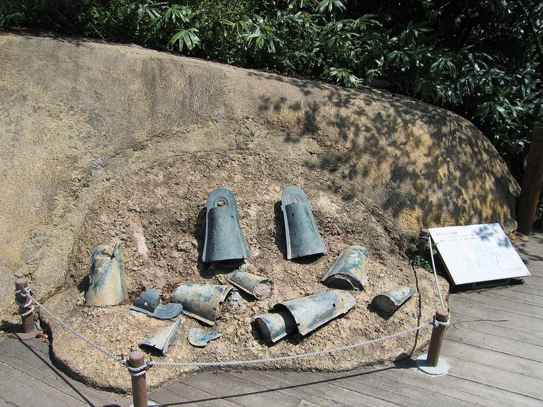
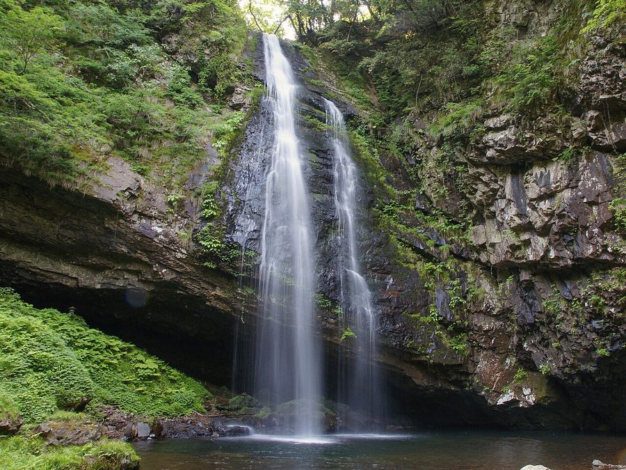

島根県雲南市のソフトクリーム・ジェラート・かき氷（4件）
寄り道スポット検索アプリ「ヨッテコ」の収録データから、島根県雲南市のソフトクリーム・ジェラート・かき氷を営業時間・料金つきで一覧にしました（2026年9月時点）。
施設一覧4件・五十音順
| 施設 | 営業時間 |
|---|---|
| Soraniwa UNNAN IZUMO ソフト | 10:00〜18:00 |
| ガトーリビドー ソフトかき氷 | 10:00〜19:00 ※曜日により異なる |
| 奥出雲前綿屋ままたまご（道の駅 たたらば壱番地） ソフト | 09:00〜20:00 |
| 奥出雲葡萄園 庭カフェ ソフトかき氷 | 10:00〜15:00 ※曜日により異なる |
営業時間・料金は変わることがあります。お出かけ前に施設へご確認ください。
定休日の傾向
定休日は水曜が最も多く（各2件）、年中無休は1件です。平日に回るなら水曜の定休を確認しておくと安心です。
営業時間の分かる4件で集計。
島根県雲南市はどんなまち？
数字で見る 雲南市
まちの横顔


雲南市は島根県の東部に位置する市で、県内で最も新しい市です。松江市・出雲市・安来市・飯南町・奥出雲町、南部は広島県の庄原市と隣接しています。総面積553.4平方キロメートルは島根県の総面積の8.3%を占め、その大半が林野です。松江市・出雲市の南に位置し、山陰と山陽を結ぶ主要街道沿いにあり、交通の要衝となっています。
北部と南部とで標高差があるため、北部の平均気温は14℃前後、南部では12℃から13℃と、平均気温にして2℃程度の差が生じます。年間降水量は約1,700ミリメートルから1,900ミリメートル程度で、冬季には北部でも降雪があります。南部や大東町、木次町の山間部などでは降霜や積雪により農作物や交通へ影響が生じることもあり、旧掛合町・旧吉田村は豪雪地帯となっています。
全国1,728市区町村の中での位置
施設数の多い順の順位です（同数の市区町村は同順位）。カードを押すとカテゴリが切り替わります。
ヨッテコ収録データ 26,026件（2026年9月時点）を市区町村ごとに数えて順位づけしています。
アイスから見た 雲南市
市内のアイスのお店は4件。全国1,728市区町村の中で1,032位です。数より、一軒ずつを訪ねるまち。
| 指標 | 雲南市 | 全国平均 | 差 |
|---|---|---|---|
| かき氷 | 50% | 16% | +34pt |
| アイスクリーム | 0% | 39% | -39pt |
| ソフトクリーム | 100% | 62% | +38pt |
| ジェラート | 0% | 14% | -14pt |
北部と南部で平均気温に2℃程度の差が生じる市。かき氷のある店が多めで、暑い時期の行き先を選べるまちです。ソフトクリームを出す店の割合が高く、道の駅や観光施設の売店で気軽に寄れます。
一方で、アイスクリームやジェラートの店は少なめです。4件での集計なので、あくまで目安として。